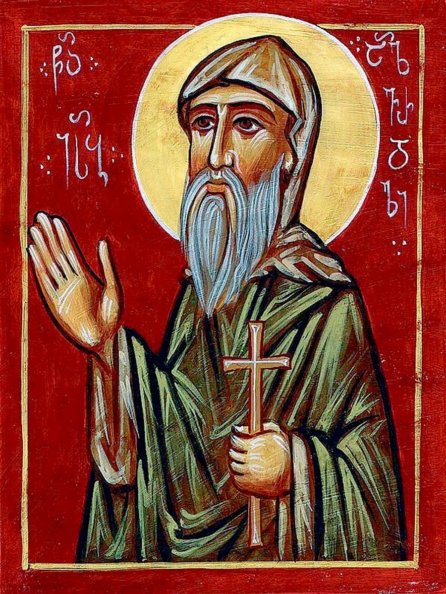

«Счастлив тот, кто вошел в сокровищницу внутри себя и увидел звезду, которая восходит в сердце»
Монах, писатель, богослов, восточно-сирийский мистик Ассирийской Церкви Востока (т. н. несторианская Церковь), систематизатор её мистико-аскетического учения.